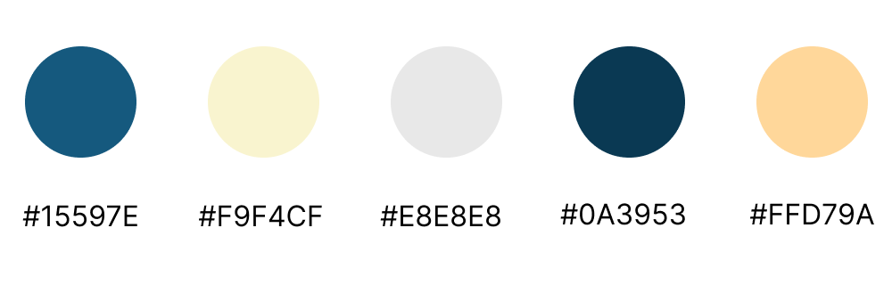

FlexChron
Time Frame: 24 Hours
Tools: Figma, Canva
Skills: Product Strategy, Rapid Ideation, User Personas, Market Research, Competitor Analysis, User Interviews
Awards: Tufts Production 2022 Runner-Up
Challenge
Contributions
- Ideation
- Market Research
- User Persona
- User Interviews
- UI/UX Design
- Synthesize + Presentation
Solution Overview
I, along with my teammates Katie Yang, Rebecca T, and Asiyah Mumuney, created FlexChron, a modern time management software focused on flexibility and prioritization. Today's society prioritizes productivity, accomplishments, and making the most of one's time. However, we also encourage people to place importance on mental health, relaxation, and a good work-life balance. We found that many of the existing products in the time management sector focus on completion of tasks without considering the user. While a computer could easily follow a set time schedule of tasks, real life unfortunately is not so simple. That's where FlexChron comes in.
FlexChron differs from other time management platforms by 'blocking' tasks, the process of assigning a given task to a general time of day rather than a specific time. We divided tasks into having 'hard' and 'soft' time frames. A hard time frame would be something that is not time negotiable, such as a meeting, class, or appointment. Soft tasks are everything else, including things with no deadlines, such as homework assignments, chores, or general to-do list type items. Users will first set their hard-time tasks, which are unlimited but can't overlap each other, they can set their soft-time tasks for the day. In order to encourage users to prioritize urgent tasks, users are given a default of five soft-time tasks per day, with 30 seconds to input. These soft-time tasks can be specified as 'morning', 'afternoon', or 'evening'. The settings (task limit, time limit) are changeable, but users are prompted that to do so diminishes the benefits of the app.
While many current apps tend to build up a list of incomplete or overdue tasks, this causes stress and discourages users from continuing to use the app. Long lists of incomplete tasks also tend to create 'analysis paralysis', leaving users even more unproductive than if they did not use a time management tool. To address this problem, FlexChron incorporates dynamic rearrangement, scheduling uncompleted tasks into future days based on available time left by the user those days. Tasks will be prioritized by a due date (if there is one), as well as an optional important flag users can flag tasks with. Users can also create a task bank of things with no deadline that they would like to do when they have time, such as reading or working out. If a user has a lot of free time after setting that day's schedule, the app will suggest a couple of activites from this bank.
Process
1. Ideation
Our first step was to brainstorm. For each of the three given problem spaces, we took five minutes to brainstorm ideas, and then discussed as a group. We quickly found that the problem space with the most ideas and interest was Inspiring Productivity and Efficiency. My initial idea was to create a task arrangement where you could choose to have deadlines, but the app wouldn't punish you for not completing things. The way I described it was a mix between the notes app and reminders. This was the initial basis of FlexChron.
As we continued to discuss, we came up with ideas such as a personalized schedule based on sleep schedule as well as syncing with Google Calendar, features which we ultimately decided against. We also came up with ideas such as dynamic task reallocation and a task limit, which did make it into our prototype. At this point, we decided that our main goal was to focus on getting things done, not when things get done. We also incorporated other ideas in a way that they would make sense in the context of our idea. One of my team members had the idea for an app to address 'micro time', or the short moments in our day where we aren't doing anything, such as sitting on the bus or waiting for an appointment. Rather than scrolling through Twitter or Instagram, the idea was that the app would suggest things like educational articles or meditations to do instead. This became the task bank, a way to incorporate this type of short personal-growth activity into one's day.
After we decided on our idea, I took the initiative in assigning roles and responsibilities. One member had no design experience, which would be the majority of our work, so I tasked her with research as it aligned more closely with her STEM background. I assigned the other two members to focus on design, which was their specialty. I would be the Product Manager, assisting with research and then working on design until a couple of hours before the end, when I would put everything together to create our final presentation.
2. Research
Our team research lead took care of most of our initial research, such as finding competitor apps. She identified Asana, Monday.com, Google Calendar, TodoIst, and Smart Task as our main competitors. She focused on the platform Asana, a competitor task management platform. She found that a strength that made it stand out from competitors was the ability to break tasks into subtasks to make them seem more manageable. Meanwhile, it had the weakness of being too complex, having lots of fields to fill out per task, and making entering tasks in itself a task.
Based on talking to peers, reading review sites, and our own experiences with various platforms, we found that the main problem points for task management were:
- An inability to set flexible deadlines
- Having incomplete tasks build up
- The human instinct to have a higher expectation of what you can accomplish in a day
We found that the time management sphere had a large market demand, and decided to aim our product at 18-35 year olds. Globally, that's a population of 1.5 billion people, and nationally, a population of 76 million. Usage of task management tools is also on an upward trend, as is generally app usage. Given global birth trends, we also expect our target market to grow over time. After our research was complete, I created the following user persona:
3. Design
We began our design process by creating a color palette. We chose softer pastel colors to make our interface as calming as possible, as opposed to harder darker colors which are sleeker and more associated with productivity.
We also chose a font scheme of SF Pro for headers and titles, and Inter for body and paragraph text.
With our basic design scheme in place, we moved into creating wireframes. Our lead designer created the following wireframes. For the second one, she added a top bar which would make it into the final product, and a bottom bar which would be redesigned.
Left: Basic daily schedule
Right: Task bank, setting preferred time
We continued to iterate on these wireframes while adding in our color scheme to create these mid-fi designs. While these designs have specific times for events within each time block, we eventually removed the specific times since our goal was to not have specific times, but rather broader time periods.
Left: Basic daily schedule
Right: Inputting task
Final Product
Our final stage was our prototypes. Please keep in mind that these were ideated, designed, and iterated on in 24 hours. We met our must-have goals of a daily schedule, task input, and design scheme. The following is the prototype presented to the judges leading to our runner-up finish.
Reflection + Next Steps
Producthon was an invaluable experience allowing me to practice designing under time pressure, as well as prioritizing user needs and features. I learned a lot about the product lifecycle, including go-to-market and marketing strategy, even though we didn't have time to add those aspects to FlexChron. It was also good practice for designing in a team, and organizing things such as color and font schemes so that we could all work on different aspects while keeping a consistent theme. Given the time, I would have loved to have built out some of the dynamic scheduling features and how that would work in a weekly schedule, as well as iterate on the differentiation between 'hard-deadline' tasks and 'soft-deadline' tasks.